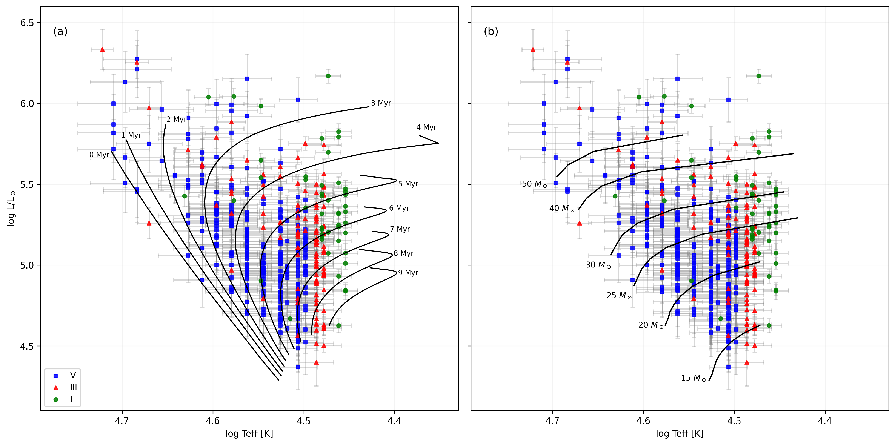
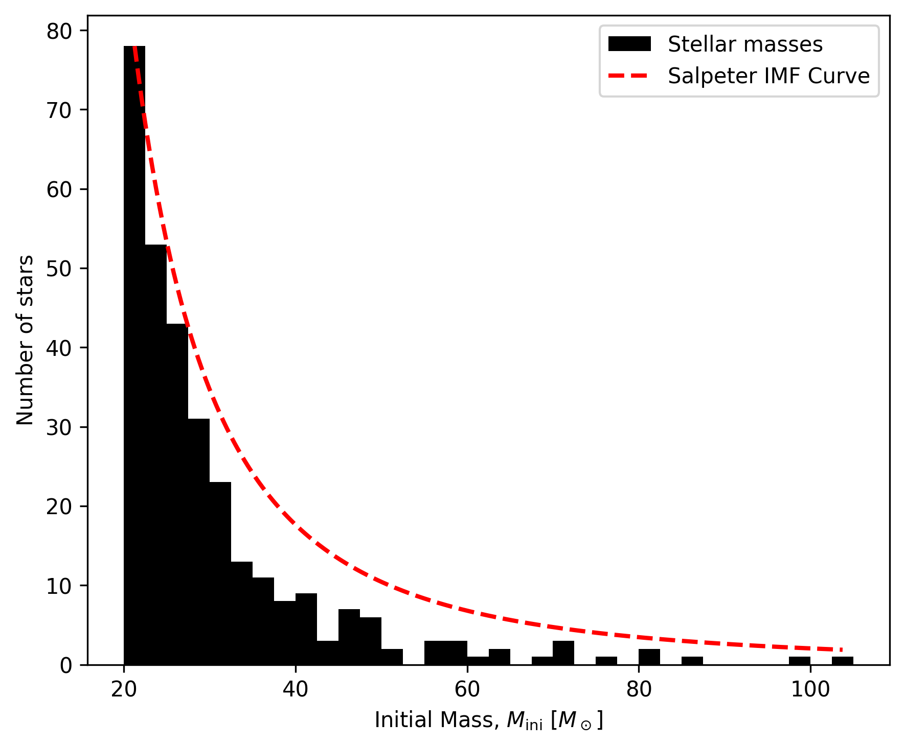
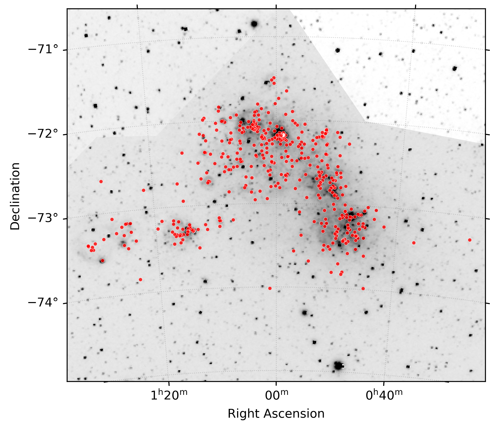
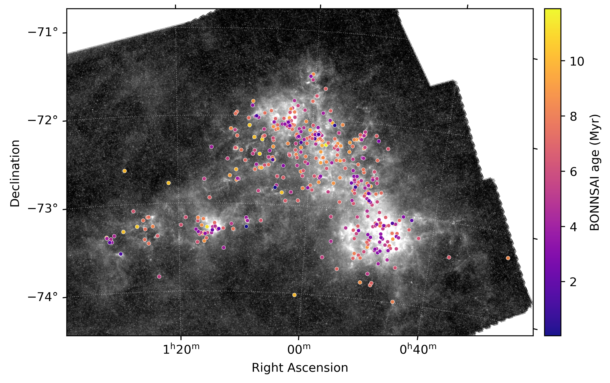

Overview
This project formed my final-year MPhys research project at the University of Sheffield. I constructed a catalogue of 448 O-type stars in the Small Magellanic Cloud by combining multiple astronomical datasets. The completed catalogue was then analysed to investigate the properties and trends within this population.
The project required cleaning and cross-matching heterogeneous data, deriving stellar parameters, propagating measurement uncertainties, comparing different evolutionary models, and analysing the resulting stellar population.
Project at a glance
Dataset: ~450 O-type stars
Primary language: Python
Methods: Monte Carlo simulation, statistical modelling, catalogue cross-matching
Output: Cleaned catalogue, derived stellar parameters, population analysis
The Problem
Massive O-type stars strongly influence the evolution of galaxies because of their intense radiation, stellar winds, and eventual supernovae. The Small Magellanic Cloud is a nearby, metal-poor galaxy that provides an important environment for studying how stars evolve under conditions that differ from those in the Milky Way. The SMC's comparatively low metallicity makes it especially useful for testing stellar evolutionary models and investigating massive-star populations in environments more similar to those found in the earlier Universe.
However, building a consistent picture of the SMC's O-star population requires combining information from several different observational catalogues collected over the years. These datasets contain different photometric measurements, spectral classifications, identifiers, and levels of uncertainty, so they cannot simply be merged without careful validation.
The project therefore focused on constructing a reliable and internally consistent catalogue of O-type stars before deriving their physical properties and investigating the luminosity, mass, age, and spatial distributions of the population to determine whether and how these differ in a low-metallicity environment.
Analysis Pipeline
Data Integration
Cross-matched stellar catalogues and combined spectral classifications, coordinates, and optical photometry.
Validation
Identified and resolved duplicate and inconsistent entries by applying consistent validation rules across the full catalogue.
Parameter Derivation
Derived and applied luminosity-class-dependent calibrations for effective temperature and bolometric correction, enabling consistent stellar luminosities to be calculated across the sample.
Uncertainty Modelling
Propagated photometric, distance, and calibration uncertainties using Monte Carlo simulations.
Model Comparison
Compared the derived stellar parameters with multiple evolutionary model grids to estimate stellar masses and ages.
Population Analysis
Investigated the properties of the SMC massive star population by deriving and using the HR diagram, initial mass function, age distribution, and spatial structure of the sample.
Key Results
Mass Distribution
The inferred initial mass function was generally steeper than the Salpeter slope, indicating fewer very high-mass stars than expected. The effect became stronger when progressively higher "low-mass" cut-offs were applied, although limited sampling and unresolved multiplicity may contribute to this result.
Spatial Association with Star Formation
The O-star population showed strong concentrations around regions traced by H-alpha emission and cold dust, consistent with the short lifetimes of massive stars and their close association with recent star formation.
Ionising Feedback
The combined O-star population produces a substantial ionising photon output across the SMC. Wolf-Rayet stars contributed approximately 19% of the combined O-star and WR ionising flux, with the total broadly consistent with previous estimates derived from H-alpha emission.
Evolutionary Models
Stellar mass estimates showed strong agreement between the two evolutionary model grids, while inferred ages displayed systematic differences of around 30%. This demonstrated that age estimates were substantially more sensitive to the choice of evolutionary model.
Selected Visualisations
A selection of outputs illustrating the stellar population, its physical properties, and its surrounding environment.




Technical Skills
Project Outputs
The completed catalogue and associated results were provided to my project supervisor for use in ongoing research.